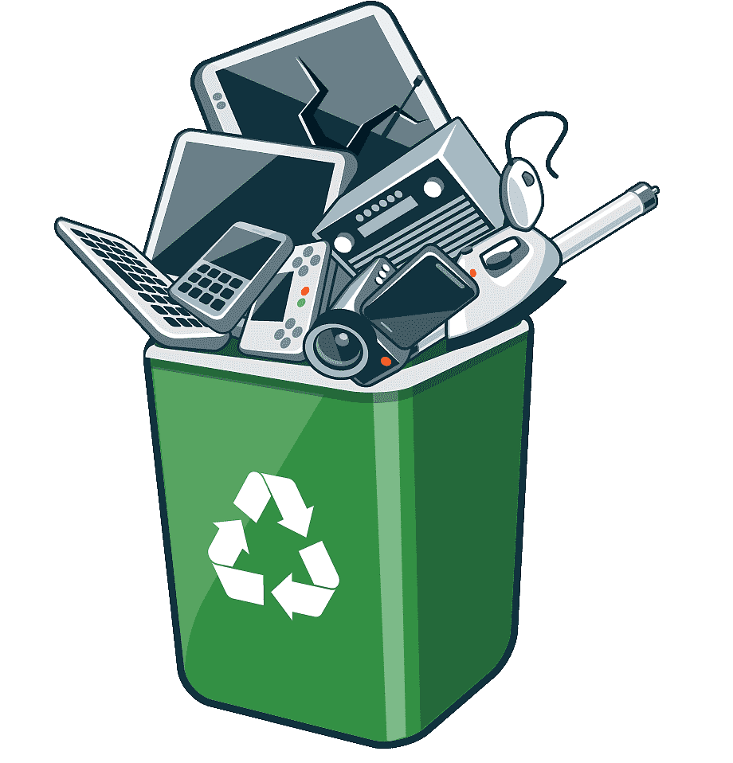

O lixo eletrônico é um dos grandes desafios da sociedade atual: graças à obsolescência programa e nossa natureza consumista, há muitos dispositivos eletrônicos no
lixo causando grandes danos ao meio ambiente. Aqui, você vai aprender o quão ruim ele é para o planeta, além conhecer a
legislação relacionada ao tema.
Quais são os perigos do lixo eletrônico?
Por serem feitos com alta tecnologia, esses resíduos podem conter substâncias tóxicas e metais pesados, como o chumbo, mercúrio, cromo e cádmio por exemplo, capazes de contaminar o solo, a água e os alimentos – impactando tanto o ambiente quanto a saúde humana.

Vídeo consciente
Como combater o descarte incorreto do lixo eletrônico?
Descartar eletrônicos em locais corretos de coleta